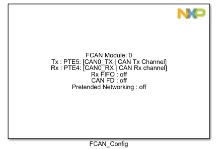
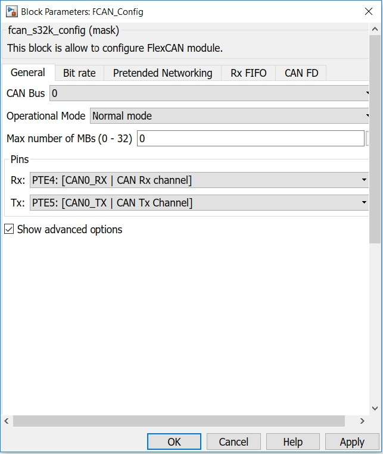
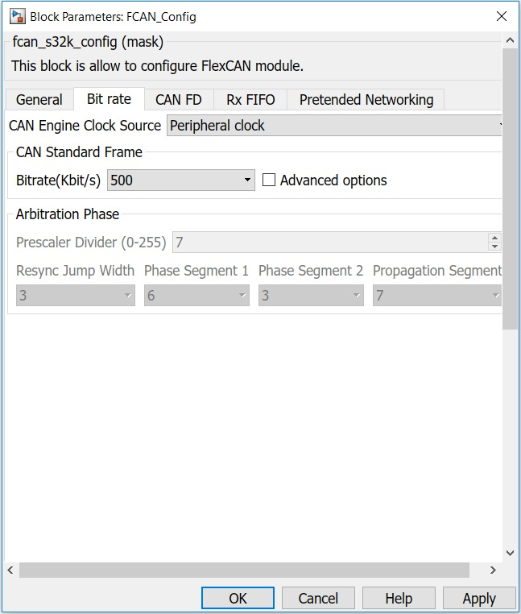
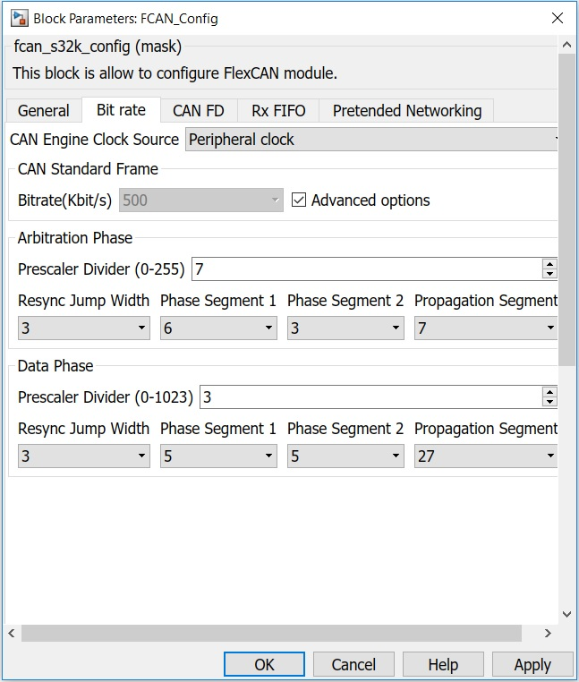
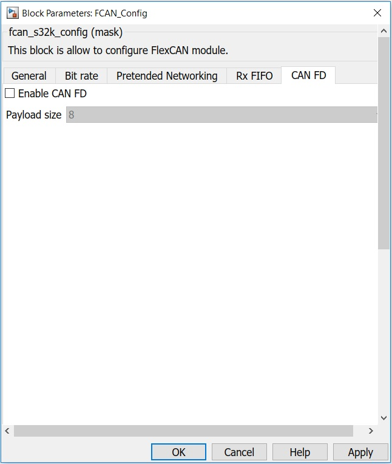
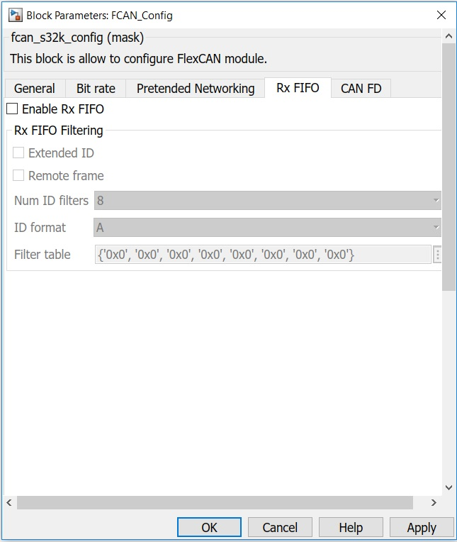
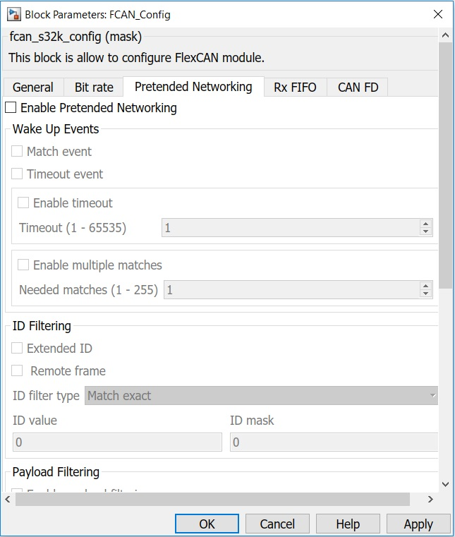

FCAN Configuration Block
This block allows the user to configure the FlexCAN module.
Block Image
Inputs:
- None
Outputs:
- None
Parameters and Dialog Box
The block dialog consists of the following tabs:
General
CAN Bus
Selects the CAN Bus.
Operational Mode
Configures the FlexCAN operation mode.
- Normal mode
- Listen-only mode
In this mode, transmission is disabled, all error counters are frozen and the module operates in a CAN Error Passive mode.
- Loop-back mode
In this mode, FlexCAN performs an internal loop back that can be used for self test operation.
Max number of MBs
Sets the maximum number of Message Buffers.
Pins
-
Rx
Rx Pin Selection.
Output legend:
PortPinName : [Function | Description]. -
Tx
Tx Pin Selection
Legend:
PortPinName : [Function | Description].
Show advanced options
Shows or hides the advanced options.
Bit rate
CAN Engine Clock Source
This bit selects the clock source to the CAN Protocol Interface (CPI) to be either the peripheral clock (driven by the FMPLL) or the crystal oscillator clock. The selected clock is the one fed to the prescaler to generate the Serial Clock (Sclock).
- 0 – The CAN Engine Clock Source is the oscillator clock
- 1 – The CAN Engine Clock Source is the peripheral bus clock
Bitrate
Available bitrate selections for the standard frames in kbps.
Advanced options
Possibility to set a bitrate (kbit/s) through time segments values for standard Can frames.
Arbitration Phase
Configures the bitrate used for standard frames or for the arbitration phase of CAN FD frames.
-
Prescaler Divider
Defines the ratio between the CPI clock frequency and the Serial Clock (Sclock) frequency. The Sclock period defines the time quantum of the CAN protocol. For the reset value, the Sclock frequency is equal to the CPI clock frequency. The Maximum value of this register is 0xFF, that gives a minimum Sclock frequency equal to the CPI clock frequency divided by 256.
-
Resync Jump Width
Defines the maximum number of time quanta1 that a bit time can be changed by one re-synchronization. The valid programmable values are 0-3.
-
Phase Segment 1
Defines the length of Phase Buffer Segment 1 in the bit time. The valid programmable values are 0-7.
-
Phase Segment 2
Defines the length of Phase Buffer Segment 2 in the bit time. The valid programmable values are 0-7.
-
Propagation Segment
Defines the length of the Propagation Segment in the bit time. The valid programmable values are 0-7.
Data Phase
Configures the bitrate used for the data phase of CAN FD frames.
CAN FD
Enables CAN with Flexible Data Rate.
Enable CAN FD
Enables CAN with Flexible Data-Rate. CAN FD mode cannot be used in Rx FIFO mode.
Payload size
Sets the payload size of the mailboxes in bytes.
Rx FIFO
Enable Rx FIFO
Enables the Rx FIFO.
The Rx FIFO is receive-only and cannot be used in CAN FD mode. The received messages are read sequentially, in the order they were received, by repeatedly reading a Message Buffer structure at the output of the FIFO
When Rx FIFO is enables, MBs 0 to 5 cannot be used for normal reception and transmission because the corresponding memory region (0x80-0xDC) is used by the FIFO engine as well as additional MBs (up to 32, depending on CAN_CTRL2[RFFN] setting) which are used as Rx FIFO ID Filter Table element.
Extended ID
Selects whether the frame format is standard or extended, used as part of the Rx FIFO reception filter.
Remote frame
Selects whether the frame is remote or not, used as part of the Rx FIFO reception filter.
Num ID filters
Defines the number of needed RX FIFO ID filters. The maximum selectable number of filters is determined by the chip.
This field must not be programmed with values that make the number of Message Buffers occupied by Rx FIFO and ID Filter exceed the number of Mailboxes present, defined by Max number of MBs.
ID format
Identifies the format of the Rx FIFO ID Filter Table elements. Note that all elements of the table are configured at the same time by this field (they are all the same format).
- Format A: One full ID (standard and extended) per ID Filter Table element.
- Format B: Two full standard IDs or two partial 14-bit (standard and extended) IDs per ID Filter Table element.
- Format C: Four partial 8-bit Standard IDs per ID Filter Table element.
- Format D: All frames rejected.
Filter table
The Rx FIFO ID Filter Table
Pretended Networking
Enable Pretended Networking
This is a special low power mode used to receive wake up messages with low power consumption. This mode operates in Stop mode. To enter in Pretended Networking mode FlexCAN must be in normal mode.
Match event
Enables Wake Up by Match event.
Timeout event
Enables Wake Up by Timeout event. This event is trigger after the specified timeout.
Enable timeout
When this is unchecked, the timeout value is set to 0. This means the timeout is disabled.
Timeout
This 16-bit field defines a timeout value that generates a wake up event. If the timeout counter reaches the target value, when FlexCAN is under Pretended Networking mode, then a wake up event is generated. The timeout limit can be configured from 1 to 65535 to control an internal 16-bit up-count timer to produce a trigger upon reaching this configured value. The internal timer is incremented based on periodic time ticks, which period is 64 times the CAN Bit Time unit.
Enable multiple matches
Selects whether the Wake Up by Match event should be trigger after a specified number of filtering matches or not.
Needed matches
Defines the number of times a given message must match the predefined filtering criteria for ID and/or Payload before generating a wake up event.
Extended ID
Selects whether the frame format is standard or extended, used as part of the ID reception filter.
Remote frame
Selects whether the frame is remote or not, used as part of the ID reception filter.
ID filter type
Selects the type of ID filtering to be applied when FlexCAN is under Pretended Networking mode.
- Match exact – Match upon a ID contents against an exact target value, ID value parameter
- Match greater than or equal to – Match upon a ID value greater than or equal to a specified target value, ID value parameter
- Match less than or equal to – Match upon a ID value smaller than or equal to a specified target value, ID value parameter
- Match in range – Match upon a ID value inside a range, greater than or equal to a specified lower limit , ID value parameter, and smaller than or equal a specified upper limit, ID mask.
ID value
This ID target value used to filter incoming message ID. The ID target value is used either for equal to, smaller than, greater than comparisons, or as the lower limit value in a ID range detection.
ID mask
This ID target value used only as the upper limit value in ID range detection. Also, when exact ID filtering criteria is selected, this register is used to store the ID mask.
Enable payload filtering
Selects whether payload filtering is enabled or not.
Min payload size
Specifies the lower limit for the number of data bytes considered valid for payload comparison.
Max payload size
Specifies the upper limit for the number of data bytes considered valid for payload comparison.
Payload filter type
Selects the type of payload filtering to be applied when FlexCAN is under Pretended Networking mode.
- Match exact – Match upon a payload contents against an exact target value, Payload value and Payload mask parameter
- Match greater than or equal to – Match upon a payload value greater than or equal to a specified target value, Payload value parameter
- Match less than or equal to – Match upon a payload value smaller than or equal to a specified target value, Payload value parameter
- Match in range – Match upon a payload value inside a range, greater than or equal to a specified lower limit, Payload value parameter, and smaller than or equal a specified upper limit, Payload mask parameter
Filtering does not accept remote messages (RTR=1) when payload filtering is active.
Payload value
This value used to filter incoming message payload. It is used either for "equal to", "smaller than or equal to", "greater than or equal to" comparisons, or as the lower limit value in a payload range detection.
Payload mask
Contains the value for the Payload Filter used only as the upper limit value in a payload range detection.
When exact payload filtering criteria is selected, this parameter is used as payload mask.
Otherwise, this parameter is unused
Block Dependency
- None
Block Miscellaneous Details
- None